Lunar eclipse on May 04, 2004 in Moscow
00:03 msk Mideclipse
At the moment of the full eclipse the Moon is enlighten by reflected light from the Earth atmosphere. So Moon is reddish, not deep black.
On the photos of lunar eclipse phases below you may see that
- The terminator of Earth's shadow is quite soft in comparison with normal lunar terminator.
- Craters don't give shadows because Sun's light go from us (from lunar zenith). So the craters are not seen to us.
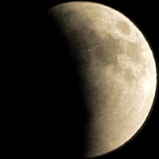
22:16
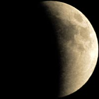
22:22
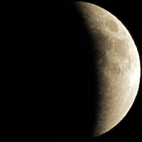
22:29
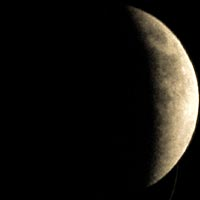
22:35
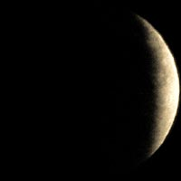
22:41
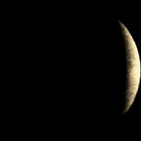
22:43
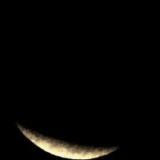
00:16
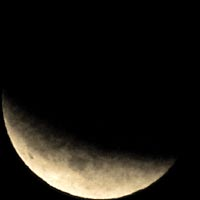
00:28
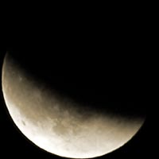
00:34

00:41
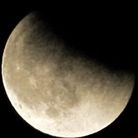
00:53
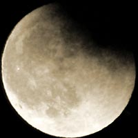
01:03
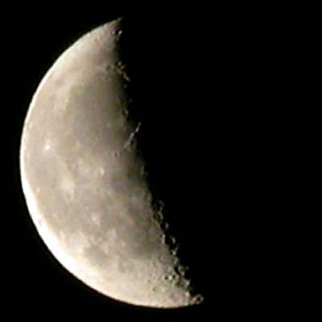
This series of photos were taken with a camera Nikon CP
4500 with a tele-lens 3x. The notation under each picture is Moscow
winter time (msk).
More detailed photo with craters at the terminator is taken by the same digicam (Nikon CP-4500 with a teleconverter 3x). Craters are visible here because the craters has long contrast shadows due to side Sun light.